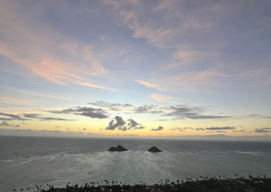

This one is my favorite so far, Lainikai!
Same with Koko Head, I need to woke up at 3 am to go hike this trail. I love Lainikai personally because the trail is not that hard, but the view is so beautiful!
Plus, if the weather is good you will be able to see the stars.
I highly recommend to go to Lainikai early in the morning!